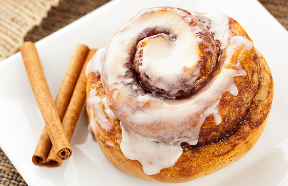

Receta de Cinnamonroll

Ingredientes:
- 450 gr harina de trigo o harina común
- 200 ml leche
- 35 gr azúcar
- 2 huevos
- 7 gr levadura seca o 20 gr de la fresca
- 5 gr sal
- 100 gr azúcar moreno
- 70 gr mantequilla
- 10 gr canela o más si te gusta el sabor más intenso
- 80 gr azúcar glass, también conocido como azúcar impalpable o azúcar flor
Pasos a seguir:
- Primero dividimos los 200 ml de leche tibia cogemos de esos, 100 ml y lo ponemos en un bowl le echamos la levadura se mezcla bien y dejamos reposar 5 minutos.z
- Pasado este tiempo la levadura ya se ha activado, y le añadiré junto al recipiente de la harina, integramos el resto de la leche los 100 ml que quedaba, el azúcar, los huevos y la sal.
- Lo mezclamos bien con una cuchara de madera, seguido espolvoreamos la encimera con harina y empezamos amasar con las manos se le agrega los 50 gr de mantequilla y seguimos amasando hasta que esté integrada tiene que estar hasta el punto de no pegarse en las manos que se vea una masa suave.
- La dejaremos reposar dentro de un bowl con papel film para que duplique su tamaño y seguimos continuando con la receta. Ahora haremos el relleno en un bowl ponemos el azúcar canela y mantequilla derretida mezclamos bien y dejamos a un lado para esperar que la harina haya duplicado su tamaño.
- Pasado el tiempo del duplique de la masa espolvoreamos la encimera y estiramos la masa hasta formar un rectángulo, enseguida le ponemos el relleno ya hecho y empezamos a enrollar hasta que hayamos terminado de enrollar y cortamos del tamaño que los quieras pero mientras más pequeños mejor porque recuerda que después lo dejaremos reposar para que otra vez dupliquen su tamaño es el tiempo justo, para precalentar el horno a 180° grados c que serían 350 f°
- Lo hornearemos entre 18 a 20 minutos pero recuerda que cada horno es un mundo debes de estar pendiente cuando se doren los sacas y hacemos el glaseado para echarlo encima... Solo necesitamos el azúcar glass, flor o impalpable con un chorrito de agua hasta formar una mezcla y se lo echamos como quieras con una manga pastelera o con cuchara haciendo unos zig-zag